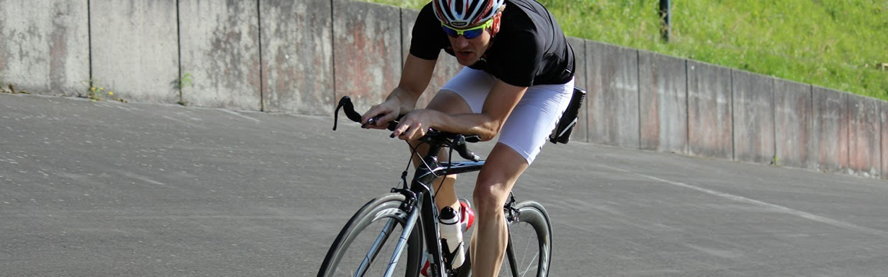

SCHWIMMEN

LAUFEN

Wettkampfspezifisches Triathlontraining

Im Wettkampf ist jeder auf sich alleine gestellt ist, doch gegen ein gemeinsames Training spricht absolut
nichts. Im
Gegenteil: Das Training im Team stärkt den Zusammenhalt und macht einfach Spaß. Seinen Mitgliedern bietet das 1.
FC
Kaiserslautern Triathlon Team zahlreiche Trainingsmöglichkeiten in verschiedenen Leistungsgruppen. Und da
sprichwörtlich "Qualität" von "Qual" kommt, gibt es doch nichts Schöneres, als sich gemeinsam zu quälen ;-)
Interessenten dürfen sich selbstverständlich gerne zu einem Probetraining bei
Monika Frenger anmelden.
| Tag | Trainingszeit | Training | Trainingsstätte | Trainer |
|---|---|---|---|---|
| Montag | 17:00-18:15 Uhr | Schwimmen | Warmfreibad | Peter |
| Donnerstag | 18:00-19:30 Uhr | Schwimmen | Warmfreibad | Peter |
| Freitag (nach Ankündigung) | 17:00-18:30 Uhr | Koppel- / Wechseltraining | Radbahn Schopp | Steffen |
| Wochenende (nach Ankündigung) | Rad | Steffen / Peter / Chris |
| Tag | Trainingszeit | Training | Trainingsstätte | Trainer |
|---|---|---|---|---|
| Dienstag | 18:30-20:00 Uhr | Schwimmen | Polizeischule Enkenbach | Peter |
| Donnerstag | 17:00-18:30 Uhr | Schwimmen | Schulzentrum Süd | Steffen / Peter |
| Wochenende (nach Ankündigung) | MTB / RR | Steffen / Peter / Chris |
Wir bieten Donnerstags, 17:45 - 18:30 Uhr einen Anfängerkurs für Erwachsene in Kleingruppe an. Bei Interesse bei Monika Frenger anfragen. Anfängerkurs - der ideale Einstieg in das Vereinstraining!